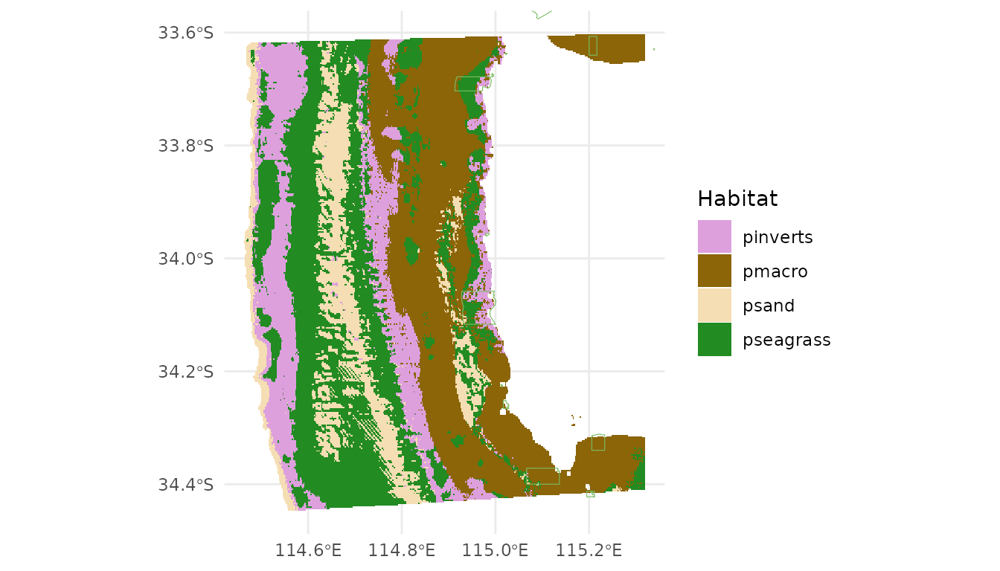

Generate spatial predictions of habitat using FSSgam
Claude Spencer & Brooke Gibbons
2023-11-13
habitat-modelling.RmdLoad libraries, process and prepare data for model selection
Load in the habitat point annotation data
dat <- readRDS(here::here(paste0("r-workflows/data/tidy/",
name, "_tidy-habitat.rds"))) %>%
glimpse()## Rows: 192
## Columns: 27
## $ campaignid <chr> "2023-03_SwC_stereo-BRUVs", "2023-03_SwC_s…
## $ sample <chr> "35", "35", "35", "35", "35", "35", "5", "…
## $ date_time <chr> "14/03/2023 23:36", "14/03/2023 23:36", "1…
## $ location <chr> NA, NA, NA, NA, NA, NA, NA, NA, NA, NA, NA…
## $ site <chr> NA, NA, NA, NA, NA, NA, NA, NA, NA, NA, NA…
## $ depth <chr> "39.6", "39.6", "39.6", "39.6", "39.6", "3…
## $ successful_count <chr> "Yes", "Yes", "Yes", "Yes", "Yes", "Yes", …
## $ successful_length <chr> "Yes", "Yes", "Yes", "Yes", "Yes", "Yes", …
## $ successful_habitat_forward <chr> "Yes", "Yes", "Yes", "Yes", "Yes", "Yes", …
## $ successful_habitat_backward <chr> "Yes", "Yes", "Yes", "Yes", "Yes", "Yes", …
## $ x <dbl> 114.9236, 114.9236, 114.9236, 114.9236, 11…
## $ y <dbl> -34.13155, -34.13155, -34.13155, -34.13155…
## $ longitude_dd <dbl> 114.9236, 114.9236, 114.9236, 114.9236, 11…
## $ latitude_dd <dbl> -34.13155, -34.13155, -34.13155, -34.13155…
## $ ID <dbl> 1, 1, 1, 1, 1, 1, 2, 2, 2, 2, 2, 2, 3, 3, …
## $ mbdepth <dbl> -34.97151, -34.97151, -34.97151, -34.97151…
## $ slope <dbl> 0.1468434, 0.1468434, 0.1468434, 0.1468434…
## $ aspect <dbl> 209.89577, 209.89577, 209.89577, 209.89577…
## $ TPI <dbl> 0.4215345, 0.4215345, 0.4215345, 0.4215345…
## $ TRI <dbl> 0.7555733, 0.7555733, 0.7555733, 0.7555733…
## $ roughness <dbl> 2.211193, 2.211193, 2.211193, 2.211193, 2.…
## $ detrended <dbl> -5.663174, -5.663174, -5.663174, -5.663174…
## $ total_points_annotated <dbl> 114, 114, 114, 114, 114, 114, 146, 146, 14…
## $ habitat <chr> "Macroalgae", "Seagrasses", "Sessile inver…
## $ number <dbl> 96, 6, 3, 1, 8, 106, 110, 36, 0, 0, 0, 146…
## $ mean.relief <dbl> 3.034483, 3.034483, 3.034483, 3.034483, 3.…
## $ sd.relief <dbl> 1.1174831, 1.1174831, 1.1174831, 1.1174831…Set the predictory variables
names(dat)## [1] "campaignid" "sample"
## [3] "date_time" "location"
## [5] "site" "depth"
## [7] "successful_count" "successful_length"
## [9] "successful_habitat_forward" "successful_habitat_backward"
## [11] "x" "y"
## [13] "longitude_dd" "latitude_dd"
## [15] "ID" "mbdepth"
## [17] "slope" "aspect"
## [19] "TPI" "TRI"
## [21] "roughness" "detrended"
## [23] "total_points_annotated" "habitat"
## [25] "number" "mean.relief"
## [27] "sd.relief"
pred.vars <- c("mbdepth","roughness", "detrended",
"slope", "TPI", "aspect", "TRI") Check for correlation of predictor variables and remove anything highly correlated (>0.95)
## mbdepth roughness detrended slope TPI aspect TRI
## mbdepth 1.00 -0.66 -0.89 -0.65 0.03 -0.32 -0.59
## roughness -0.66 1.00 0.48 0.99 0.29 0.06 0.99
## detrended -0.89 0.48 1.00 0.47 0.00 0.39 0.42
## slope -0.65 0.99 0.47 1.00 0.29 0.06 0.99
## TPI 0.03 0.29 0.00 0.29 1.00 -0.02 0.35
## aspect -0.32 0.06 0.39 0.06 -0.02 1.00 0.04
## TRI -0.59 0.99 0.42 0.99 0.35 0.04 1.00Plot the individual predictors to assess if any transformations are necessary
plot_transformations(pred.vars)


Remove any highly correlated predictor variables
pred.vars <- c("depth","roughness", "detrended",
"TPI", "aspect", "TRI")Check to make sure response variables have less than 80% zeros
resp.vars.all = unique(as.character(dat$habitat))
resp.vars = character()
for(i in 1:length(resp.vars.all)){
temp.dat = dat[which(dat$habitat == resp.vars.all[i]),]
if(length(which(temp.dat$habitat == 0)) / nrow(temp.dat) < 0.8){
resp.vars = c(resp.vars, resp.vars.all[i])}
}
resp.vars ## [1] "Macroalgae" "Seagrasses" "Sessile invertebrates"
## [4] "Consolidated (hard)" "Unconsolidated (soft)" "reef"Run the full subset model selection process
This loop has been adapted from @beckyfisher/FSSgam, and examples and documentation is available on GitHub and in Fisher, R, Wilson, SK, Sin, TM, Lee, AC, Langlois, TJ. A simple function for full-subsets multiple regression in ecology with R. Ecol Evol. 2018; 8: 6104–6113. https://doi.org/10.1002/ece3.4134
for(i in 1:length(resp.vars)){
print(resp.vars[i])
use.dat <- dat[dat$habitat == resp.vars[i],]
use.dat <- as.data.frame(use.dat)
Model1 <- gam(cbind(number, (total_points_annotated - number)) ~
s(mbdepth, bs = 'cr'),
family = binomial("logit"), data = use.dat)
model.set <- generate.model.set(use.dat = use.dat,
test.fit = Model1,
pred.vars.cont = pred.vars,
cyclic.vars = c("aspect"),
k = 5,
cov.cutoff = 0.7
)
out.list <- fit.model.set(model.set,
max.models = 600,
parallel = T)
names(out.list)
out.list$failed.models
mod.table <- out.list$mod.data.out
mod.table <- mod.table[order(mod.table$AICc), ]
mod.table$cumsum.wi <- cumsum(mod.table$wi.AICc)
out.i <- mod.table[which(mod.table$delta.AICc <= 2), ]
out.all <- c(out.all, list(out.i))
var.imp <- c(var.imp, list(out.list$variable.importance$aic$variable.weights.raw))
for(m in 1:nrow(out.i)){
best.model.name <- as.character(out.i$modname[m])
png(file = here::here(paste(outdir, m, resp.vars[i], "mod_fits.png", sep = "")))
if(best.model.name != "null"){
par(mfrow = c(3, 1), mar = c(9, 4, 3, 1))
best.model = out.list$success.models[[best.model.name]]
plot(best.model, all.terms = T, pages = 1, residuals = T, pch = 16)
mtext(side = 2, text = resp.vars[i], outer = F)}
dev.off()
}
}Save model fits and importance scores
names(out.all) <- resp.vars
names(var.imp) <- resp.vars
all.mod.fits <- list_rbind(out.all, names_to = "response")
all.var.imp <- do.call("rbind",var.imp)
write.csv(all.mod.fits[ , -2], file = here::here(paste0(outdir, name, "_all.mod.fits.csv")))
write.csv(all.var.imp, file = here::here(paste0(outdir, name, "_all.var.imp.csv")))Spatially predict the top model from the model selection process
Transform the habitat data into wide format for prediction
widedat <- dat %>%
pivot_wider(values_from = "number", names_from = "habitat", values_fill = 0) %>%
clean_names() %>%
glimpse()## Rows: 32
## Columns: 31
## $ campaignid <chr> "2023-03_SwC_stereo-BRUVs", "2023-03_SwC_s…
## $ sample <chr> "35", "5", "26", "23", "29", "4", "32", "3…
## $ date_time <chr> "14/03/2023 23:36", "14/03/2023 23:49", "1…
## $ location <chr> NA, NA, NA, NA, NA, NA, NA, NA, NA, NA, NA…
## $ site <chr> NA, NA, NA, NA, NA, NA, NA, NA, NA, NA, NA…
## $ depth <chr> "39.6", "42.7", "36", "41", "42.6", "45", …
## $ successful_count <chr> "Yes", "Yes", "Yes", "Yes", "Yes", "Yes", …
## $ successful_length <chr> "Yes", "Yes", "Yes", "Yes", "Yes", "Yes", …
## $ successful_habitat_forward <chr> "Yes", "Yes", "Yes", "Yes", "Yes", "Yes", …
## $ successful_habitat_backward <chr> "Yes", "Yes", "Yes", "Yes", "Yes", "Yes", …
## $ x <dbl> 114.9236, 114.9292, 114.9284, 114.9190, 11…
## $ y <dbl> -34.13155, -34.12953, -34.12729, -34.12832…
## $ longitude_dd <dbl> 114.9236, 114.9292, 114.9284, 114.9190, 11…
## $ latitude_dd <dbl> -34.13155, -34.12953, -34.12729, -34.12832…
## $ id <dbl> 1, 2, 3, 4, 5, 6, 7, 8, 9, 10, 11, 12, 13,…
## $ mbdepth <dbl> -34.97151, -36.35807, -40.68553, -38.25594…
## $ slope <dbl> 0.146843375, 0.812689749, 0.694289634, 0.4…
## $ aspect <dbl> 209.89577, 62.41434, 40.87387, 294.10675, …
## $ tpi <dbl> 0.42153454, 2.39535522, -0.67607403, 0.476…
## $ tri <dbl> 0.75557327, 3.29823494, 2.39221191, 1.8367…
## $ roughness <dbl> 2.21119308, 8.36493301, 8.36493301, 5.3012…
## $ detrended <dbl> -5.6631737, -7.0394716, -11.2637815, -8.69…
## $ total_points_annotated <dbl> 114, 146, 213, 123, 196, 88, 25, 19, 33, 8…
## $ mean_relief <dbl> 3.034483, 3.900000, 4.000000, 3.555556, 4.…
## $ sd_relief <dbl> 1.1174831, 0.4472136, 0.0000000, 0.8555853…
## $ macroalgae <dbl> 96, 110, 105, 50, 28, 50, 7, 1, 16, 30, 57…
## $ seagrasses <dbl> 6, 36, 108, 66, 168, 36, 0, 6, 6, 54, 12, …
## $ sessile_invertebrates <dbl> 3, 0, 0, 7, 0, 2, 2, 0, 0, 0, 2, 0, 1, 0, …
## $ consolidated_hard <dbl> 1, 0, 0, 0, 0, 0, 3, 0, 0, 0, 0, 0, 0, 0, …
## $ unconsolidated_soft <dbl> 8, 0, 0, 0, 0, 0, 13, 12, 11, 0, 0, 0, 0, …
## $ reef <dbl> 106, 146, 213, 123, 196, 88, 12, 7, 22, 84…Load the raster of bathymetry data and derivatives
preds <- rast(here::here(paste0("r-workflows/data/spatial/rasters/",
name, "_bathymetry_derivatives.rds")))
plot(preds)
Transform the raster to a dataframe to predict onto
preddf <- as.data.frame(preds, xy = TRUE, na.rm = TRUE) %>%
dplyr::mutate(depth = abs(mbdepth)) %>%
clean_names() %>%
glimpse()## Rows: 73,350
## Columns: 10
## $ x <dbl> 115.1714, 115.1739, 115.1764, 115.1789, 115.1814, 115.1839, …
## $ y <dbl> -33.60361, -33.60361, -33.60361, -33.60361, -33.60361, -33.6…
## $ mbdepth <dbl> -14.83014, -13.89184, -14.18757, -14.48647, -14.47323, -14.3…
## $ slope <dbl> 0.24350203, 0.19746646, 0.17799167, 0.18316828, 0.22091857, …
## $ aspect <dbl> 339.995240, 341.597571, 21.180346, 12.600024, 356.337121, 35…
## $ tpi <dbl> -3.721524e-01, 5.277313e-01, 1.502453e-01, -1.123428e-03, 9.…
## $ tri <dbl> 0.9656481, 0.8277034, 0.6934198, 0.6945946, 0.8081013, 0.902…
## $ roughness <dbl> 2.807414, 2.421717, 2.196986, 2.156502, 2.581898, 2.606502, …
## $ detrended <dbl> -2.871674, -2.161609, -2.683798, -3.207528, -3.417629, -3.56…
## $ depth <dbl> 14.83014, 13.89184, 14.18757, 14.48647, 14.47323, 14.39490, …Manually set the top model from the full subset model selection
# Sessile invertebrates
m_inverts <- gam(cbind(sessile_invertebrates, total_points_annotated - sessile_invertebrates) ~
s(mbdepth, k = 5, bs = "cr") +
s(detrended, k = 5, bs = "cr"),
data = widedat, method = "REML", family = binomial("logit"))
summary(m_inverts)##
## Family: binomial
## Link function: logit
##
## Formula:
## cbind(sessile_invertebrates, total_points_annotated - sessile_invertebrates) ~
## s(mbdepth, k = 5, bs = "cr") + s(detrended, k = 5, bs = "cr")
##
## Parametric coefficients:
## Estimate Std. Error z value Pr(>|z|)
## (Intercept) -3.0037 0.1683 -17.85 <2e-16 ***
## ---
## Signif. codes: 0 '***' 0.001 '**' 0.01 '*' 0.05 '.' 0.1 ' ' 1
##
## Approximate significance of smooth terms:
## edf Ref.df Chi.sq p-value
## s(mbdepth) 2.604 2.943 96.742 <2e-16 ***
## s(detrended) 1.883 2.162 2.913 0.298
## ---
## Signif. codes: 0 '***' 0.001 '**' 0.01 '*' 0.05 '.' 0.1 ' ' 1
##
## R-sq.(adj) = 0.944 Deviance explained = 93.2%
## -REML = 83.915 Scale est. = 1 n = 32
plot(m_inverts, pages = 1, residuals = T, cex = 5)
# Rock
m_rock <- gam(cbind(consolidated_hard, total_points_annotated - consolidated_hard) ~
s(mbdepth, k = 5, bs = "cr"),
data = widedat, method = "REML", family = binomial("logit"))
summary(m_rock)##
## Family: binomial
## Link function: logit
##
## Formula:
## cbind(consolidated_hard, total_points_annotated - consolidated_hard) ~
## s(mbdepth, k = 5, bs = "cr")
##
## Parametric coefficients:
## Estimate Std. Error z value Pr(>|z|)
## (Intercept) -5.1476 0.2882 -17.86 <2e-16 ***
## ---
## Signif. codes: 0 '***' 0.001 '**' 0.01 '*' 0.05 '.' 0.1 ' ' 1
##
## Approximate significance of smooth terms:
## edf Ref.df Chi.sq p-value
## s(mbdepth) 2.993 3.333 41.77 <2e-16 ***
## ---
## Signif. codes: 0 '***' 0.001 '**' 0.01 '*' 0.05 '.' 0.1 ' ' 1
##
## R-sq.(adj) = 0.339 Deviance explained = 45%
## -REML = 39.778 Scale est. = 1 n = 32
plot(m_rock, pages = 1, residuals = T, cex = 5)
# Sand
m_sand <- gam(cbind(unconsolidated_soft, total_points_annotated - unconsolidated_soft) ~
s(aspect, k = 5, bs = "cr") +
s(roughness, k = 5, bs = "cr") +
s(tpi, k = 5, bs = "cr"),
data = widedat, method = "REML", family = binomial("logit"))
summary(m_sand)##
## Family: binomial
## Link function: logit
##
## Formula:
## cbind(unconsolidated_soft, total_points_annotated - unconsolidated_soft) ~
## s(aspect, k = 5, bs = "cr") + s(roughness, k = 5, bs = "cr") +
## s(tpi, k = 5, bs = "cr")
##
## Parametric coefficients:
## Estimate Std. Error z value Pr(>|z|)
## (Intercept) -6.3296 0.9278 -6.822 8.96e-12 ***
## ---
## Signif. codes: 0 '***' 0.001 '**' 0.01 '*' 0.05 '.' 0.1 ' ' 1
##
## Approximate significance of smooth terms:
## edf Ref.df Chi.sq p-value
## s(aspect) 3.839 3.972 25.950 1.99e-05 ***
## s(roughness) 2.461 2.796 8.386 0.106147
## s(tpi) 3.140 3.592 25.030 0.000131 ***
## ---
## Signif. codes: 0 '***' 0.001 '**' 0.01 '*' 0.05 '.' 0.1 ' ' 1
##
## R-sq.(adj) = 0.0191 Deviance explained = 50.8%
## -REML = 117.48 Scale est. = 1 n = 32
plot(m_sand, pages = 1, residuals = T, cex = 5)
# Seagrasses
m_seagrass <- gam(cbind(seagrasses, total_points_annotated - seagrasses) ~
s(aspect, k = 5, bs = "cr") +
s(mbdepth, k = 5, bs = "cr") +
s(tri, k = 5, bs = "cr"),
data = widedat, method = "REML", family = binomial("logit"))
summary(m_seagrass)##
## Family: binomial
## Link function: logit
##
## Formula:
## cbind(seagrasses, total_points_annotated - seagrasses) ~ s(aspect,
## k = 5, bs = "cr") + s(mbdepth, k = 5, bs = "cr") + s(tri,
## k = 5, bs = "cr")
##
## Parametric coefficients:
## Estimate Std. Error z value Pr(>|z|)
## (Intercept) -3.732 4.634 -0.806 0.421
##
## Approximate significance of smooth terms:
## edf Ref.df Chi.sq p-value
## s(aspect) 3.419 3.786 26.46 1.7e-05 ***
## s(mbdepth) 3.512 3.842 72.20 < 2e-16 ***
## s(tri) 3.813 3.959 52.94 < 2e-16 ***
## ---
## Signif. codes: 0 '***' 0.001 '**' 0.01 '*' 0.05 '.' 0.1 ' ' 1
##
## R-sq.(adj) = 0.556 Deviance explained = 73.4%
## -REML = 208.1 Scale est. = 1 n = 32
plot(m_seagrass, pages = 1, residuals = T, cex = 5)
# Macroalgae
m_macro <- gam(cbind(macroalgae, total_points_annotated - macroalgae) ~
s(mbdepth, k = 5, bs = "cr") +
s(detrended, k = 5, bs = "cr") +
s(tpi, k = 5, bs = "cr"),
data = widedat, method = "REML", family = binomial("logit"))
summary(m_macro)##
## Family: binomial
## Link function: logit
##
## Formula:
## cbind(macroalgae, total_points_annotated - macroalgae) ~ s(mbdepth,
## k = 5, bs = "cr") + s(detrended, k = 5, bs = "cr") + s(tpi,
## k = 5, bs = "cr")
##
## Parametric coefficients:
## Estimate Std. Error z value Pr(>|z|)
## (Intercept) -1.1228 0.1203 -9.336 <2e-16 ***
## ---
## Signif. codes: 0 '***' 0.001 '**' 0.01 '*' 0.05 '.' 0.1 ' ' 1
##
## Approximate significance of smooth terms:
## edf Ref.df Chi.sq p-value
## s(mbdepth) 3.856 3.978 130.06 <2e-16 ***
## s(detrended) 3.818 3.970 42.82 <2e-16 ***
## s(tpi) 3.946 3.995 114.31 <2e-16 ***
## ---
## Signif. codes: 0 '***' 0.001 '**' 0.01 '*' 0.05 '.' 0.1 ' ' 1
##
## R-sq.(adj) = 0.486 Deviance explained = 70%
## -REML = 200.04 Scale est. = 1 n = 32
plot(m_macro, pages = 1, residuals = T, cex = 5)
# Reef
m_reef <- gam(cbind(reef, total_points_annotated - reef) ~
s(aspect, k = 5, bs = "cr") +
s(roughness, k = 5, bs = "cr") +
s(tpi, k = 5, bs = "cr"),
data = widedat, method = "REML", family = binomial("logit"))
summary(m_reef)##
## Family: binomial
## Link function: logit
##
## Formula:
## cbind(reef, total_points_annotated - reef) ~ s(aspect, k = 5,
## bs = "cr") + s(roughness, k = 5, bs = "cr") + s(tpi, k = 5,
## bs = "cr")
##
## Parametric coefficients:
## Estimate Std. Error z value Pr(>|z|)
## (Intercept) 6.3296 0.9278 6.822 8.96e-12 ***
## ---
## Signif. codes: 0 '***' 0.001 '**' 0.01 '*' 0.05 '.' 0.1 ' ' 1
##
## Approximate significance of smooth terms:
## edf Ref.df Chi.sq p-value
## s(aspect) 3.839 3.972 25.950 1.99e-05 ***
## s(roughness) 2.461 2.796 8.386 0.106147
## s(tpi) 3.140 3.592 25.030 0.000131 ***
## ---
## Signif. codes: 0 '***' 0.001 '**' 0.01 '*' 0.05 '.' 0.1 ' ' 1
##
## R-sq.(adj) = 0.0191 Deviance explained = 50.8%
## -REML = 117.48 Scale est. = 1 n = 32
plot(m_reef, pages = 1, residuals = T, cex = 5)
Predict, rasterise and plot habitat predictions
preddf <- cbind(preddf,
"pmacro" = predict(m_macro, preddf, type = "response"),
"prock" = predict(m_rock, preddf, type = "response"),
"psand" = predict(m_sand, preddf, type = "response"),
"pseagrass" = predict(m_seagrass, preddf, type = "response"),
"pinverts" = predict(m_inverts, preddf, type = "response"),
"preef" = predict(m_reef, preddf, type = "response")) %>%
glimpse()## Rows: 73,350
## Columns: 16
## $ x <dbl> 115.1714, 115.1739, 115.1764, 115.1789, 115.1814, 115.1839, …
## $ y <dbl> -33.60361, -33.60361, -33.60361, -33.60361, -33.60361, -33.6…
## $ mbdepth <dbl> -14.83014, -13.89184, -14.18757, -14.48647, -14.47323, -14.3…
## $ slope <dbl> 0.24350203, 0.19746646, 0.17799167, 0.18316828, 0.22091857, …
## $ aspect <dbl> 339.995240, 341.597571, 21.180346, 12.600024, 356.337121, 35…
## $ tpi <dbl> -3.721524e-01, 5.277313e-01, 1.502453e-01, -1.123428e-03, 9.…
## $ tri <dbl> 0.9656481, 0.8277034, 0.6934198, 0.6945946, 0.8081013, 0.902…
## $ roughness <dbl> 2.807414, 2.421717, 2.196986, 2.156502, 2.581898, 2.606502, …
## $ detrended <dbl> -2.871674, -2.161609, -2.683798, -3.207528, -3.417629, -3.56…
## $ depth <dbl> 14.83014, 13.89184, 14.18757, 14.48647, 14.47323, 14.39490, …
## $ pmacro <dbl> 1, 1, 1, 1, 1, 1, 1, 1, 1, 1, 1, 1, 1, 1, 1, 1, 1, 1, 1, 1, …
## $ prock <dbl> 0.004609083, 0.004696284, 0.004668624, 0.004640833, 0.004642…
## $ psand <dbl> 2.220446e-16, 2.220446e-16, 3.000783e-03, 8.328435e-04, 2.22…
## $ pseagrass <dbl> 0.046259901, 0.033119616, 0.007671424, 0.007378813, 0.042947…
## $ pinverts <dbl> 0.1647383, 0.1796898, 0.1747609, 0.1701599, 0.1704906, 0.171…
## $ preef <dbl> 1.0000000, 1.0000000, 0.9969992, 0.9991672, 1.0000000, 1.000…Tidy and aggregate
Rasterise and aggregate the predictions to speed up plotting
prasts <- rast(preddf %>% dplyr::select(x, y, starts_with("p")),
crs = crs(preds)) %>%
aggregate(fact = 5, fun = "mean")
plot(prasts)
summary(prasts)## pmacro prock psand pseagrass
## Min. :0.0000 Min. :0.0000 Min. :0.0000 Min. :0.0000
## 1st Qu.:0.0000 1st Qu.:0.0000 1st Qu.:0.0244 1st Qu.:0.0000
## Median :0.0000 Median :0.0000 Median :0.0421 Median :0.0000
## Mean :0.3122 Mean :0.0072 Mean :0.0511 Mean :0.1589
## 3rd Qu.:0.7070 3rd Qu.:0.0048 3rd Qu.:0.0626 3rd Qu.:0.3303
## Max. :1.0000 Max. :0.0903 Max. :0.9857 Max. :0.8386
## NA's :1907 NA's :1907 NA's :1907 NA's :1907
## pinverts preef
## Min. :0.0085 Min. :0.0143
## 1st Qu.:0.0214 1st Qu.:0.9374
## Median :0.9997 Median :0.9579
## Mean :0.5903 Mean :0.9489
## 3rd Qu.:1.0000 3rd Qu.:0.9756
## Max. :1.0000 Max. :1.0000
## NA's :1907 NA's :1907Transform back to a dataframe for tidy plotting
preddf_a <- as.data.frame(prasts, xy = T, na.rm = T) %>%
glimpse()## Rows: 2,785
## Columns: 8
## $ x <dbl> 115.1814, 115.1939, 115.2064, 115.2189, 115.2314, 115.2439, …
## $ y <dbl> -33.60861, -33.60861, -33.60861, -33.60861, -33.60861, -33.6…
## $ pmacro <dbl> 1.000000e+00, 1.000000e+00, 1.000000e+00, 1.000000e+00, 1.00…
## $ prock <dbl> 4.827720e-03, 4.824659e-03, 4.765923e-03, 4.665409e-03, 4.58…
## $ psand <dbl> 0.0004345755, 0.0008956925, 0.0014936140, 0.0047054219, 0.00…
## $ pseagrass <dbl> 1.939852e-02, 1.429077e-02, 6.126759e-03, 8.371194e-03, 1.35…
## $ pinverts <dbl> 0.20747991, 0.20529889, 0.19384250, 0.17873347, 0.16858580, …
## $ preef <dbl> 0.9995654, 0.9991043, 0.9985064, 0.9952946, 0.9994450, 0.999…Create a column for the ‘dominant’ habitat and tidy the names for plotting
preddf_a$dom_tag <- apply(preddf_a %>% dplyr::select(pmacro, prock, psand, pseagrass, pinverts), 1,
FUN = function(x){names(which.max(x))})
glimpse(preddf_a)## Rows: 2,785
## Columns: 9
## $ x <dbl> 115.1814, 115.1939, 115.2064, 115.2189, 115.2314, 115.2439, …
## $ y <dbl> -33.60861, -33.60861, -33.60861, -33.60861, -33.60861, -33.6…
## $ pmacro <dbl> 1.000000e+00, 1.000000e+00, 1.000000e+00, 1.000000e+00, 1.00…
## $ prock <dbl> 4.827720e-03, 4.824659e-03, 4.765923e-03, 4.665409e-03, 4.58…
## $ psand <dbl> 0.0004345755, 0.0008956925, 0.0014936140, 0.0047054219, 0.00…
## $ pseagrass <dbl> 1.939852e-02, 1.429077e-02, 6.126759e-03, 8.371194e-03, 1.35…
## $ pinverts <dbl> 0.20747991, 0.20529889, 0.19384250, 0.17873347, 0.16858580, …
## $ preef <dbl> 0.9995654, 0.9991043, 0.9985064, 0.9952946, 0.9994450, 0.999…
## $ dom_tag <chr> "pmacro", "pmacro", "pmacro", "pmacro", "pmacro", "pmacro", …Save final predictions
Load marine park data from CAPAD 2022 and transform to match the CRS of the habitat predictions
marine.parks <- st_read(here::here("r-workflows/data/spatial/shapefiles/Collaborative_Australian_Protected_Areas_Database_(CAPAD)_2022_-_Marine.shp")) %>%
st_make_valid() %>%
dplyr::mutate(ZONE_TYPE = str_replace_all(ZONE_TYPE,"\\s*\\([^\\)]+\\)", "")) %>%
dplyr::filter(ZONE_TYPE %in% c("National Park Zone", "Sanctuary Zone"), STATE %in% "WA") %>%
st_transform(32750) ## Reading layer `Collaborative_Australian_Protected_Areas_Database_(CAPAD)_2022_-_Marine' from data source `/home/runner/work/CheckEM/CheckEM/r-workflows/data/spatial/shapefiles/Collaborative_Australian_Protected_Areas_Database_(CAPAD)_2022_-_Marine.shp'
## using driver `ESRI Shapefile'
## Simple feature collection with 3775 features and 26 fields
## Geometry type: MULTIPOLYGON
## Dimension: XY
## Bounding box: xmin: 70.71702 ymin: -58.44947 xmax: 170.3667 ymax: -8.473407
## Geodetic CRS: WGS 84Set colours for habitat plotting
unique(preddf_a$dom_tag)## [1] "pmacro" "pinverts" "pseagrass"
hab_fills <- scale_fill_manual(values = c(
"psand" = "wheat",
"pinverts" = "plum",
"pseagrass" = "forestgreen",
"pmacro" = "darkgoldenrod4"
), name = "Habitat")Build plot elements for dominant habitat
ggplot() +
geom_tile(data = preddf_a, aes(x, y, fill = dom_tag)) +
hab_fills +
new_scale_fill() +
geom_sf(data = marine.parks, fill = NA, aes(colour = ZONE_TYPE),
size = 0.2, show.legend = F) +
scale_colour_manual(values = c("National Park Zone" = "#7bbc63",
"Sanctuary Zone" = "#bfd054"),
name = "Marine Parks") +
coord_sf(xlim = c(min(preddf_a$x), max(preddf_a$x)),
ylim = c(min(preddf_a$y), max(preddf_a$y))) +
labs(x = NULL, y = NULL, colour = NULL) +
theme_minimal()
Transform habitat predictions for easy plotting with ggplot::facet_wrap
indclass <- preddf_a %>%
pivot_longer(cols = starts_with("p"), names_to = "habitat",
values_to = "Probability") %>%
dplyr::mutate(habitat = case_when(habitat %in% "pinverts" ~ "Sessile invertebrates",
habitat %in% "pmacro" ~ "Macroalgae",
habitat %in% "prock" ~ "Rock",
habitat %in% "psand" ~ "Sand",
habitat %in% "pseagrass" ~ "Seagrass",
habitat %in% "preef" ~ "Reef")) %>%
glimpse()## Rows: 16,710
## Columns: 5
## $ x <dbl> 115.1814, 115.1814, 115.1814, 115.1814, 115.1814, 115.1814…
## $ y <dbl> -33.60861, -33.60861, -33.60861, -33.60861, -33.60861, -33…
## $ dom_tag <chr> "pmacro", "pmacro", "pmacro", "pmacro", "pmacro", "pmacro"…
## $ habitat <chr> "Macroalgae", "Rock", "Sand", "Seagrass", "Sessile inverte…
## $ Probability <dbl> 0.9999999954, 0.0048277199, 0.0004345755, 0.0193985152, 0.…Build plot elements for individual habitat probabilities
ggplot() +
geom_tile(data = indclass, aes(x, y, fill = Probability)) +
scale_fill_viridis(option = "D", direction = -1) +
new_scale_fill() +
geom_sf(data = marine.parks, fill = NA, aes(colour = ZONE_TYPE),
size = 0.2, show.legend = F) +
scale_colour_manual(values = c("National Park Zone" = "#7bbc63",
"Sanctuary Zone" = "#bfd054"),
name = "Marine Parks") +
coord_sf(xlim = c(min(preddf_a$x), max(preddf_a$x)),
ylim = c(min(preddf_a$y), max(preddf_a$y))) +
labs(x = NULL, y = NULL, fill = "Probability") +
theme_minimal() +
facet_wrap(~habitat) +
theme(axis.text.x = element_text(size = 7))